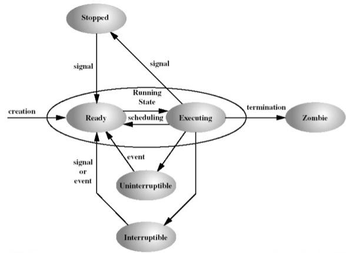

ICLP - Laboratorul 1
Terminologie
(amintiri de la Arhitectura Sistemelor si Sisteme de Operare)Un sistem de operare este un produs software care se ocupa cu gestionarea si coordonarea activitătilor unui sistem de calcul. El mediaza accesul programelor de aplicatie la resursele masinii.
Un shell este un produs software care asigura interfata cu utilizatorul. El este rulat de catre o consola care poarta numele de terminal pe distributiile Linux. Exista mai multe tipuri de shell in Linux, cel mai folosit fiind bash-ul (Bourne Again Shell) Un prompt in shell are urmatorul format:
username@localhost:~$- username reprezinta numele utilizatorului logat in acel moment
- localhost reprezinta numele statiei de lucru
- ~ indica directorul curent, corespunzator home-ului utilizatorului. De obicei este /home/username
- $ marcheaza terminarea promptului si inceperea zonei unde utilizatorul poate introduce comenzi
bogdan@bmacoveiPC:~$
$ ls "listeaza continutul directorului curent"
$ ls -l "listeaza continutul cu informatii aditionale - dimensiunea, data ultimei modificari etc."
$ man command_name "ofera informatii despre comanda command_name"
$ command_name --help "la fel ca man"
$ cd path/folder_name "schimba folderul curent cu cel specificat"
$ cd .. "urca in ierarhia de foldere, la parinte"
$ cat file_name "afiseaza continutul unui fisier"
$ echo message "afiseaza un mesaj la standard output"
$ grep strig_to_find in_file "cauta string_to_find in fisierul in_file"
$ rm file "sterge fisierul file"
$ mkdir folder_name "creeaza un folder cu numele folder_name"
GCC (GNU Compiler Collection) este o suita de compilatoare disponibila pe majoritatea distributiilor Linux. Este folosit pentru a compila o paleta larga de limbaje de programare precum C, C++, Java, Fortran, Objective-C. Un fisier sursa reprezinta un fisier text in care este scris cod corespunzator unui anumit limbaj de programare. Dintr-un fisier sursa C se obtine, prin procesul de compilare, un fisier executabil. Compilarea se realizeaza in Linux prin comanda gcc.
$ gcc main.c$ ./a.out$ gcc main.c -o my-exec- Precompilarea sau preprocesarea
- Compilarea
- Asamblarea
In urma procesului de preprocesare, se realizeaza substitutii in fisierul sursa la intalnirea comenzilor de preprocesare care incep cu caracterul #. Pentru a opri gcc-ul la aceasta faza, introducem comanda:
$ gcc -E main.cCompilarea este faza in care, din fisierul preprocesat, se obtine un fisier in limbaj de asamblare. Pentru a opri gcc-ul la aceasta faza, introducem comanda:
$ gcc -S main.cAsamblarea este faza in care codul scris in limbaj de asamblare este tradus in cod masina, reprezentand codificarea binara a instructiunilor programului initial. Fisierul obtinut poarta numele de fisier cod obiect. Pentru a opri gcc-ul la aceasta faza, introducem comanda:
$ gcc -c main.c
int main(int argc, char** argv, char** arge)
- argc este numarul de argumente;
- argv este un array de siruri de caractere, reprezentand valorile celor argc argumente. argv[argc] = NULL, iar argv[0] este numele programului executabil;
- arge este un array de siruri de caractere, reprezentand variabilele de mediu si valorile acestora.
- fisiere de tip regular: orice fisiere ce reprezinta o insiruire simpla de bytes (text, executabile etc.);
- fisiere de tip director: fisierele care memoreaza legatura dintre numerele de i-node si numele atribuite fisierelor;
- fisiere de tip pipe: fisiere prin care se face o comunicare unidirectionala si functioneaza pe principiul FIFO;
- fisiere de tip socket: folosite pentru comunicare in retea;
- fisiere de tip legatura simbolica: in zona sa de date reprezinta o referinta catre un alt i-node din sistem.
- Tabela de descriptori. Fiecare proces are o tabela de descriptori, constituita dintr-un array de structuri, indexat de la 0 la cel mai mare descriptor posibil. Daca procesul a asociat unui fisier un descriptor i (numar natural), intrarea i din aceasta tabela e completata cu informatii specifice, printre care un pointer la o intrare in tabela de fisiere deschise. De regula, primii trei descriptori sunt asignati automat, dupa cum urmeaza: 0 = intrarea standard, 1 = iesirea standard, 2 = iesirea standard pentru erori. Ei pot fi desemnati si prin urmatoarele constante simbolice, definite in "unistd.h": STDIN_FILENO (=0), STDOUT_FILENO (=1), STDERR_FILENO (=2).
- Tabela de fisiere deschise este o tabela partaja de toate procesele. Orice intrare din tabela de descriptori, a oricarui proces, memoreaza adresa unei intrari din aceasta tabela. La deschiderea unui fisier de catre un proces, se creeaza o noua intrare in tabela de descriptori a procesului si o noua intrare in tabela de fisiere deschise. Aceasta contine un pointer catre o intrare din tabela de i-node-uri din memorie.
- Tabela de i-node-uri. La deschiderea unui fisier, in caz ca datele despre i-node-ul corespunzator nu se gasesc deja in aceasta tabela, se creeaza o intrare.
Operatii asupra fisierelor
- Deschiderea unui fisier
int open(char* file_name, int mode, mode_t permissions)In caz de succes, se intoarce cel mai mic descriptor liber, altfel se intoarce -1 si se seteaza errno.
Headere necesare: sys/types.h, sys/stat.h, fcntl.h
int close(int descriptor)Headere necesare: unistd.h
ssize_t read(int descriptor, void* destination, size_t bytes)Aceasta destinatie trebuie sa fie alocata in prealabil. In caz de succes, intoarce numarul de octeti cititi, care poate fi mai mic decat bytes.
In caz de esec, intoarce -1 si seteaza errno. Headere necesare: unistd.h
ssize_t write(int descriptor, void* source, size_t bytes)In caz de succes, intoarce numarul de octeti scrisi, iar in caz de esec intoarce -1 si seteaza errno.
Headere necesare: unistd.h
Procese
Intuitia despre procese
Un proces este o instanta a unui program. Acesta este modul prin care sistemul de operare abstractizeaza executia unui program.
Dintr-un program se pot crea mai multe procese care sunt, insa, independente logic.
Diferenta dintre un program si un proces
Un program este o entitate pasiva ce descrie modul in care ar trebui sa se execute un proces. Acesta se afla salvat pe disc sub forma unui fisier numit executabil (ELF - executable and linking format, PE - portable executable).
Fisierele executabile sunt, din punctul de vedere al sistemului de operare, fisiere de tip regular.
Un proces este o entitate activa ce reprezinta imaginea in memoria principala (RAM) a unui program. Pentru orice cerere a utilizatorului, sistemul de operare laneaza un proces pentru a o satisface. De gestiunea proceselor se ocupa kernel-ul sistemului de operare. Pentru a putea realiza acest lucru, acesta are nevoie sa tina intern o structura pentru fiecare proces existent, numita PCB - Process Control Block.
Process Control Block
| pointer | process state |
| process number | |
| process counter | |
|
registers |
|
| memory limits | |
| list of open files | |
| ... | |
Unele dintre cele mai importante informatii continute de un PCB sunt:
- identificatorul unic al procesului;
- spatiul de adresa;
- valoarea registrilor generali: PC (program counter) si SP (stack pointer);
- tabela de descriptori deschisi;
- directorul de lucru;
- identificatorul proprietarului;
- starea procesului.
PID-ul (process identification) reprezinta identificatorul unic al unui proces din sistem. Aceasta este cea mai importanta caracteristica a unui proces si este folosita in majoritatea API-urilor POSIX de lucru cu procese. Pentru a obtine PID-ul curent, se utilizeaza functia
pid_t getpid()pid_t getppid()Pentru a crea un proces nou, se utilizeaza apelul sistem
pid_t fork()Procesele sunt organizate sub forma ierarhica pe principiul tata-fiu si sunt abstractizate in sistemul virtual de fisiere din /proc, unde pentru fiecare PID exista un director aferent. Primul proces lansat de kernel, dupa ce a fost incarcat in memorie de catre bootloader este init. Acesta are PID-ul 1 si este lansat dupa imaginea din /sbin/init. Procesul init este tatal majoritatea proceselor de sistem, ce asigura buna functionare a calculatorului. Un proces poate avea oricati fii, dar doar un singur tata. Pentru a afisa ierarhia de procese ce sunt active la un moment dat in sistem se foloseste comanda:
$ pstreePe parcursul executiei unui proces, el se poate afla in doua moduri: user mode (cand executa instructiuni de utilizator, executa algoritmi, rezolva probleme, lucruri uzuale) sau kernel mode (atunci cand executa instructiuni privilegiate precum scrierea pe disk, citirea de pe un socket de retea, afisare pe ecran). Un proces intra in kernel mode atunci cand executa un apel de sistem. Intrucat, din punctul de vedere al programatorului, un apel sistem seamana cu un apel normal de functie C, putem imparti functiile din C in doua categorii: functii de biblioteca (functii uzuale, precum cele de manipulare de stringuri, precum strlen(), strcat() etc) si functii de apel de sistem.
Pentru a afla informatii despre procesele ce ruleaza in sistem se foloseste comanda:
$ ps$ ps -e
$ ps -p pid1, pid2, ..., pidn
$ ps -C cmd1, cmd2, ..., cmdn
$ ps -u user1, user2, ..., usern$ topStarile procesului
Un proces, pe toate durata executiei sale, se poate afla intr-una dintre urmatoarele stari. Starea curenta este tinuta in PCB. Starile sunt:
- NEW - procesul abia a fost lansat;
- READY - procesului i-au fost alocate toate resursele necesare de catre sistemul de operare si asteapta timp de la procesor;
- RUNNING - instructiunile procesului sunt rulate pe procesor;
- SLEEPING - procesul este adormit, asteptand un eveniment extern pentru a fi trezit;
- SUSPENDED - procesul este suspendat si asteapta primrea unui semnal din partea sistemului de operare pentru a continua executia;
- ZOMBIE - procesul este terminat si asteapta ca parintele sa ia act de acest lucru.

In timp ce este in RUNNING, un proces poate executa instructiuni de utilizator, si atunci spunem ca este in user space, sau instructiuni de sistem privilegiate, si atunci spunem ca este in kernel space. Un proces poate sa fie rulat in doua moduri, in foreground (acapareaza terminalul curent, poate sa citeasca input de la utilizator, iar prompt-ul shell-ului ne revine doar atunci cand procesul s-a terminat), sau in background (atunci cand prompt-ul de la shell ne revine imediat, procesul isi continua executia, insa nu mai poate primi input de la standard input).
Memoria virtuala
Sistemele de operare moderne o facilitate foarte importanta care se numeste multitasking. Aceasta facilitate inseamna ca sistemul poate tine in memoria principala mai multe programe ce pot sa fie executate pe procesor intr-un mod echitabil prin ceea ce se numeste context switching.
Aceasta abordare aduce, insa, o problema: spatiul de adresare a doua procese poate sa se suprapuna si sa cauzeze o alterare a integritatii datelor. Astfel, s-a introdus un mecanism ce se numeste memorie virtuala. Prin acest mecanism, spatiul de adresare a unui proces este virtualizat - adresele sale sunt, de fapt, adrese virtuale ce sunt mapate la adrese fizice de catre o componenta din procesor ce poarta numele MMU - Memory Management Unit.
Memoria virtuala a unui proces se imparte in mai multe segmente. Acestea sunt zona de text (contine instructiunile cod masina ale procesului), zona de date initializate (contine variabilele globale si statice initializate ce sunt citite din executabil la momentul incarcarii programului), zona de date neinitializate (contine variabile globale si statice neinitializate, care sunt definite doar la nivel de simbol si sunt initializate cu valori aleatoare la runtime), stack-ul (zona de memorie a carei dimensiuni este definita dinamic la runtime, unde sunt retinute variabilele locale si argumentele functiilor) si heap-ul (zona de memorie unde se pot aloca variabile dinamic).
Terminarea proceselor. Procese zombie. Sincronizarea tata-fiu
Un proces se poate termina anormal (atunci cand apar exceptii - efectueaza o impartire la 0, dereferentiaza un pointer NULL etc), sau normal (atunci cand executa un apel de sistem _exit()).
Procese zombie si sincronizarea tata-fiu. De cele mai multe ori, procesele tata si fiu nu se termina in acelasi timp, intre ele existand un comportament asincron. Se disting trei scenarii, proceslee se termina in acelasi timp, procesul tata se termina inaintea procesului fiu (caz in care procesul fiu devine orfan si este adoptat de un proces a carui imagine a fost comanda /sbin/init), respectiv procesul fiu se termina inaintea procesului tata (caz in care procesul fiu trece in starea ZOMBIE, asteptand ca tatal sa ia act de terminarea sa. Daca, totusi, tatal nu ia act de terminarea sa, atunci noul tata, init, va lua act de terminarea sa si zombie-ul va iesi din tabela de procese a sistemului).
Procesul tata poate executa urmatorul apel pentru a lua la cunostinta terminarea proceselor fiu:
#include < sys/types.h >
#include < sys/wait.h >
pid_t wait(int* status)
pid_t waitpid(pid_t pid, int* status, int options)